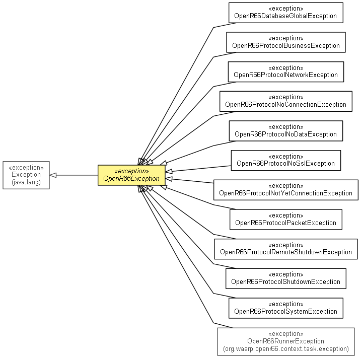

org.waarp.openr66.protocol.exception
Class OpenR66Exception
java.lang.Object
 java.lang.Throwable
java.lang.Exception
org.waarp.openr66.protocol.exception.OpenR66Exception
java.lang.Throwable
java.lang.Exception
org.waarp.openr66.protocol.exception.OpenR66Exception
- All Implemented Interfaces:
- Serializable
- Direct Known Subclasses:
- OpenR66DatabaseGlobalException, OpenR66ProtocolBusinessException, OpenR66ProtocolNetworkException, OpenR66ProtocolNoConnectionException, OpenR66ProtocolNoDataException, OpenR66ProtocolNoSslException, OpenR66ProtocolNotYetConnectionException, OpenR66ProtocolPacketException, OpenR66ProtocolRemoteShutdownException, OpenR66ProtocolShutdownException, OpenR66ProtocolSystemException, OpenR66RunnerException
public abstract class OpenR66Exception
- extends Exception

Mother class of All OpenR66 Exceptions
- Author:
- frederic bregier
- See Also:
- Serialized Form
| Methods inherited from class java.lang.Throwable |
fillInStackTrace, getCause, getLocalizedMessage, getMessage, getStackTrace, initCause, printStackTrace, printStackTrace, printStackTrace, setStackTrace, toString |
OpenR66Exception
public OpenR66Exception()
OpenR66Exception
public OpenR66Exception(String arg0,
Throwable arg1)
- Parameters:
arg0 - arg1 -
OpenR66Exception
public OpenR66Exception(String arg0)
- Parameters:
arg0 -
OpenR66Exception
public OpenR66Exception(Throwable arg0)
- Parameters:
arg0 -
Copyright © 2009-2012 Waarp. All Rights Reserved.